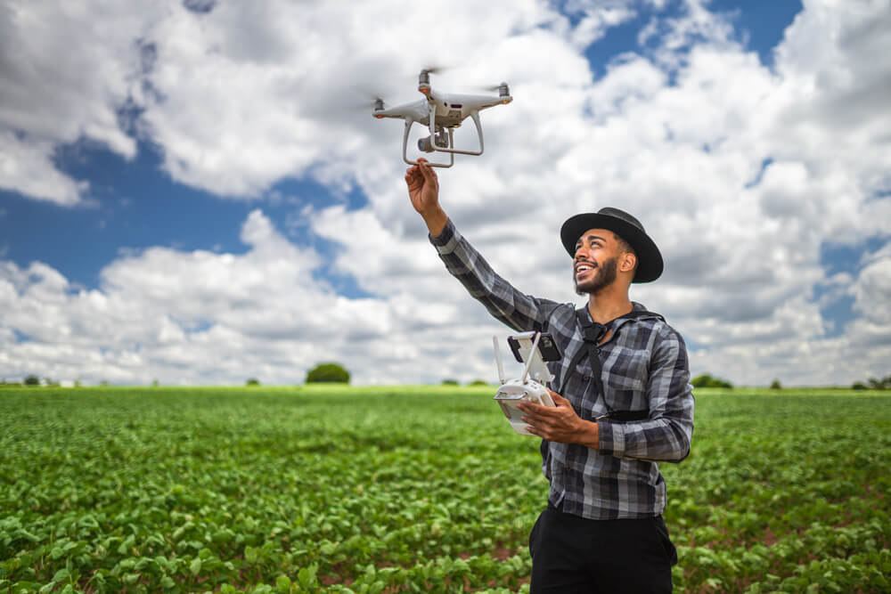
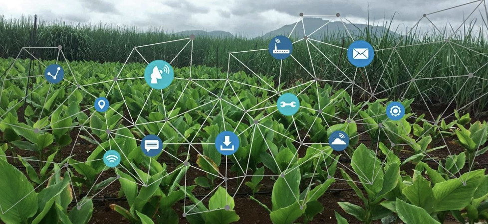

O drone agrícola é uma ferramenta promissora de pulverização e pode trazer benefícios imediatos, como tirar o aplicador de dentro da lavoura no momento da aplicação, principalmente o que usa o pulverizador costal; não causar amassamento da cultura; não depender das condições do solo para entrar na lavoura.
Por meio da pulverização aérea, os drones trazem mais eficiência, precisão e economia de tempo na aplicação de insumos para fertilizar o solo e controlar pragas e doenças nas lavouras. Além disso, eles têm um custo menor do que aeronaves maiores.
Os sensores na agricultura são implementos tecnológicos capazes de avaliar com precisão situações como imagens de satélite, análises de solo, além de monitoramento de pragas e doenças. Ou seja, são fundamentais em diversas etapas da produção e permitem enxergar, com precisão, a saúde da plantação.
Por que utilizar o sensoriamento remoto na agricultura?
Na agricultura 4.0, o sensoriamento remoto permite obter uma análise detalhada sobre cobertura vegetal, tipo de solo, topografia e áreas que sofrem com erosão ou patógenos de solo.
O GPS agrícola permite monitorar desde os funcionários até veículos e equipamentos. Permite também realizar navegação, medir áreas, determinar pontos (coordenadas), armazenar dados, entre outras funções essenciais, sempre com exatidão e eficiência.
Dentre as utilizações dos sensores na agricultura, é possível destacar a análise e desenvolvimento de índices de vegetação. Assim, é possível obter índice de crescimento, estado nutricional e também produtividade.
Por meio das imagens de satélites, os agricultores são capazes de identificar, em questões de segundos, áreas com menor produtividade, devido a problemas como pragas, doenças ou falhas no sistema de irrigação, bem como as regiões onde a produtividade é superior. Os satélites fornecem dados vitais para a avaliação do impacto ambiental das atividades humanas. Eles podem monitorar desmatamento, poluição da água, qualidade do ar e mudanças climáticas. As imagens de satélite também ajudam na vigilância de áreas protegidas e no rastreamento de espécies ameaçadas.